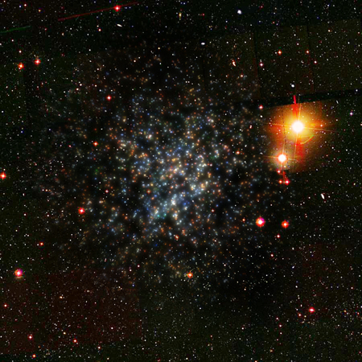
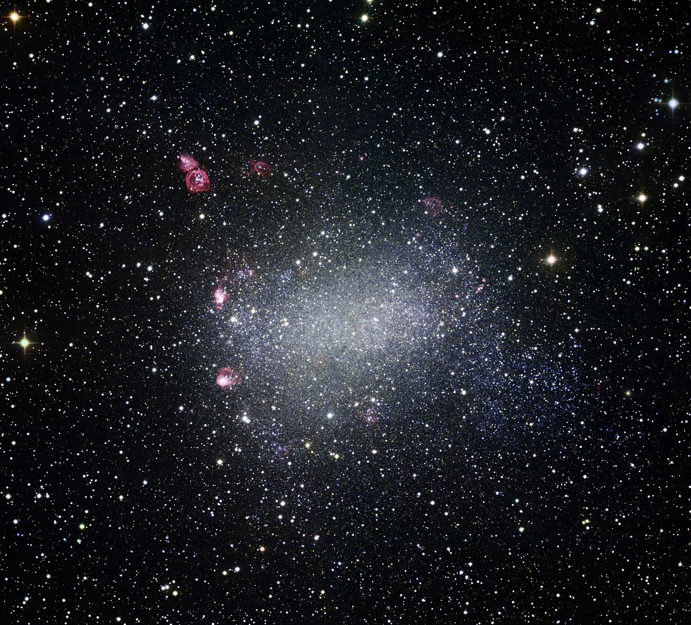

Andromeda
The Andromeda Galaxy, which also goes by the names "Messier 31", "M31" and "NGC 224" is a similar barred spiral galaxy as the Milky Way is.

Boötes Dwarf Galaxy
Boötes Dwarf Galaxy, also known as "Boo I dSph" is a faint galaxy discovered in 2006, it is in the constellation of Boötes 197,000 light-years away.
Barnard's Galaxy
Barnard's Galaxy, also known as "NGC 6822", "IC 4895" and "Caldwell 56" is a barred irregular galaxy found by E. E. Barnard in 1884, it is located in the constellation Sagittarius around 1.6 million light years away.
What's this?
These are some galaxies that are "near" (in a space sense) us.
What's a light year?
A light-year is unit of length, it is about 9.461 trillion kilometres (9,460,730,472,580,800 metres exactly). It signifies how far light moves in a year.
Why do the galaxies have so many names?
Galaxies have multiple names due to there being multiple catalogs that maintain them, here's some more information